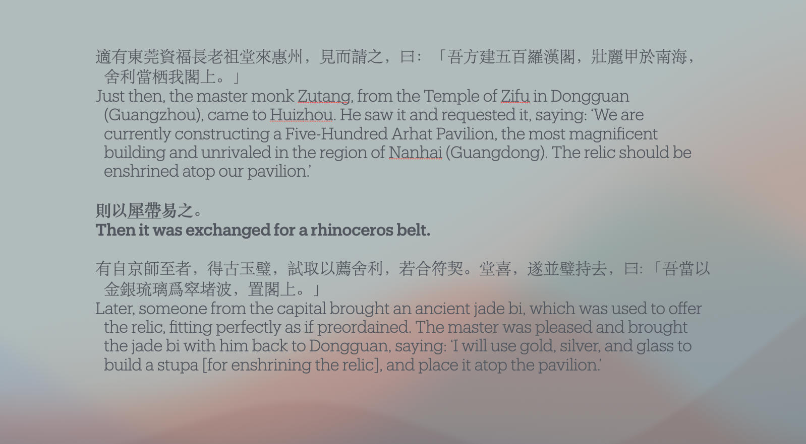
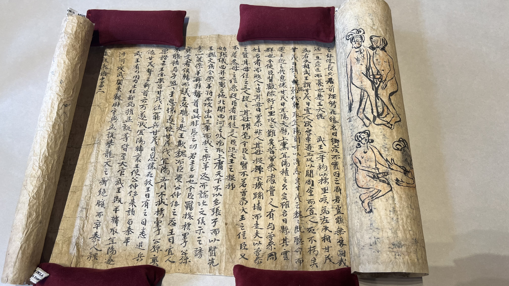
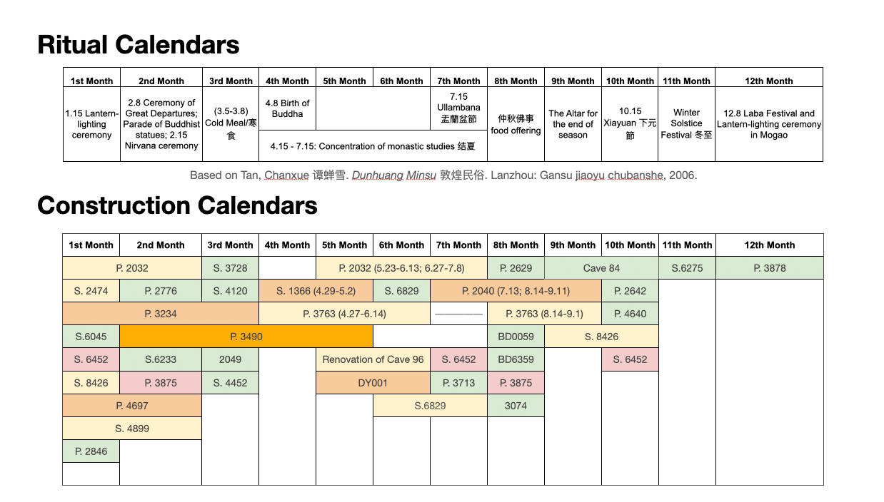
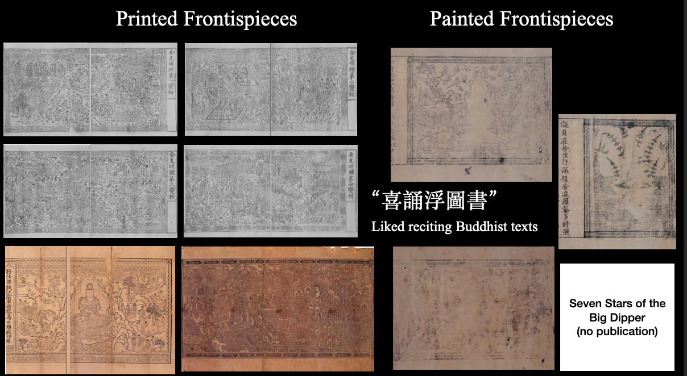
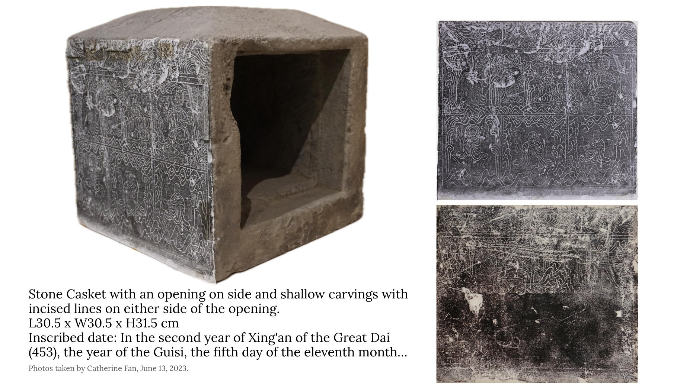
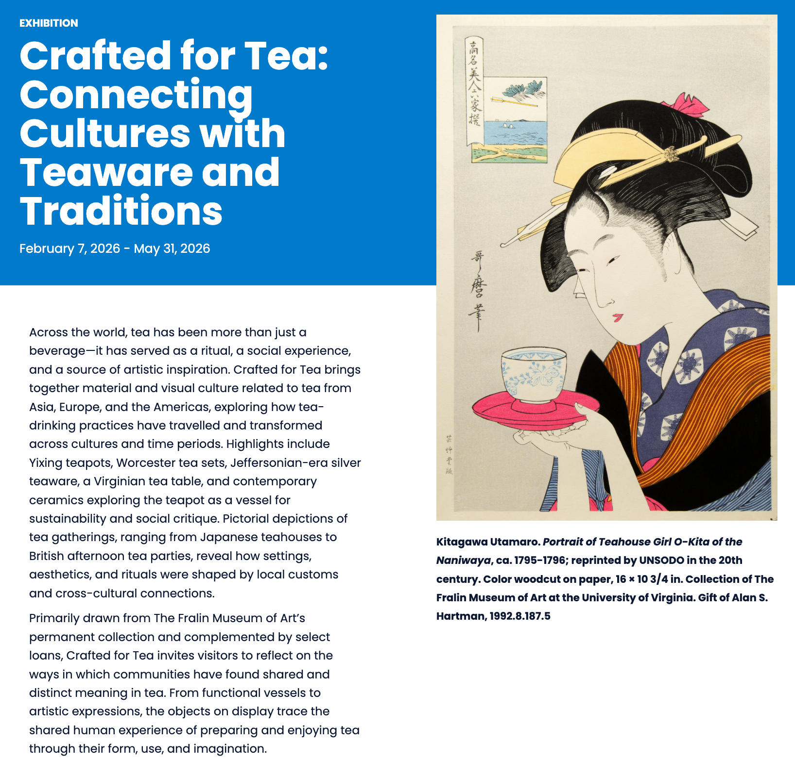

Projects
Research Projects:
Qianfo Imagery in Ninth- to Fourteenth-Century China
At first glance, qianfo 千佛—literally “thousand Buddhas”—appears to be an art of repetition: rows of nearly identical Buddhas multiplied across a single surface. Such images give visual form to Mahāyāna Buddhist concepts of innumerable Buddhas existing across multidimensional space and cyclical time and of the inherent potential for buddhahood within all sentient beings. By the ninth century, qianfo imagery had circulated in China for centuries and become a widely recognizable form of Buddhist iconography. Characterized by repetitive depictions of the Buddha and often referred to as the “Thousand Buddhas motif,” qianfo imagery has often been studied as a rigid visual formula dictated by canonical Buddhist texts or treated as a decorative pattern. My dissertation approaches qianfo imagery as a flexible visual language by exploring how multicultural Buddhist communities in China actively reinterpreted, adapted, created, and engaged with the imagery between the ninth and fourteenth centuries. During this period, the collapse of centralized imperial rule gave way to multiethnic regional regimes across China and thus created conditions for the expansion of local Buddhist centers and short-lived cults, many of which left limited textual records. My project focuses on examples preserved primarily in material forms, including molded bricks adorning the exterior of monumental pagodas, mountain cliff carvings of individualized Buddha figures, portable manuscripts for personal repentance rituals, and stamp seals for imprinting individual Buddha images.
Secular Relics or Sacred Commodities? Examples of Reconstructing Buddhist Authority in Song China
What happened when Buddhist relics were treated as mundane objects of exchange in Song China? How did the value and sacredness of Buddhist relics change when an imperial Buddha's tooth relic was gifted as a "non-valuable" object among scholar-officials, or when the relic of a deceased Buddhist master was exchanged between private hands for a rhinoceros belt? How do these exchanges deconstruct and reconstruct the interconnectedness of Buddhist authorities? This paper examines the temporal exchangeability of Buddhist relics in Song China (960-1279), which shifted between states of sacred and profane objects, as a key example of religious modalities that embodied the triangulation of power between religious agents, authoritative regimes, and sacred objects. Drawing on textual and archaeological evidence from selected case studies, this paper examines how Buddhist relics circulated outside sacred contexts and became accessible to wealthy Buddhist lay people, curious scholar-officials, and non-Buddhist civilians from diverse communities. The case studies reveal how relics mediated the fluidity of Buddhist authority and served as part of a continuous process of making, deconstructing, and redefining relationships among triangulated power entities in Song China.

Hidden Pleasures: Affective Engagement with Erotic Sketches in a Medieval Dunhuang Manuscript
How does the experience of viewing erotic sketches contribute to shaping a private sense of self in medieval China? This paper examines a unique set of erotic sketches drawn on the back of a medieval Confucian manuscript from Dunhuang, revealing how visual depictions of sexual intimacy fostered deeply personal and sensory interactions. Comprising four scenes of sexual intercourse, these sketches occupy a discreet location toward the end of the scroll, juxtaposing sensual imagery with the classical texts on the front. This layered positioning suggests that the sketches functioned as a private, affective space, inviting intimate engagement from viewers. Evidence of frequent touching—apparent in blurred facial details—reflects the manuscript's role as more than a static visual document; it served as an interactive medium through which viewers could engage with desires and emotions, bridging the visual and the tactile. Contributing to previous major studies that focus on pedagogical or moralistic roles of erotic imagery in medieval China, this study highlights an individualized, embodied response to erotic images, revealing dimensions of personal experience and sensory resonance. Through a material analysis of the manuscript, including its strategic placement of sketches and traces of physical handling, this paper argues that these sketches provide unique insight into the ways erotic sketches could elicit private emotional responses within the context of medieval Chinese visual culture. By uncovering this intimate connection of materiality, desire, and visuality, this study hopes to open new avenues for understanding the expressions of sensual engagement in medieval China.

Construction Calendars: The Liminal Periods of Sacred Scheduling at Mogao Landscape
How were the sacred landscapes of Buddhist sites constructed without disrupting ongoing religious practices? What strategies were employed to balance the demands of construction and on-site ritual activities? This paper explores the dynamic process of constructing hundreds of new and renovated cave projects in Mogao landscape, Dunhuang.
Focusing on what I term "construction calendars," this paper examines the work schedules of local artisans and craftsmen during the Guiyijun period (848-1036), with an emphasis on the 10th century onwards. These reveal liminal periods for negotiating and accommodating the construction process and local religious ritual events. Textual evidence from the Dunhuang Library Cave reveals regulated procedures for entering the site and the need to negotiate standard schedules to avoid overlapping construction and ritual activities. These moments of desacralization, or gaps in religious activities, strategically allowed labor-intensive construction to proceed without conflicting with and disrupting religious practices. The paper demonstrates that communal agreements and temporal regulations were established to ensure and enhance the sacredness of the Mogao landscape. This focus on calendars for both construction and ritual allows us to reconsider temporality in the management of sacred spaces in medieval China.

Gendered Visions of Faith: Lady Sun's Printed and Painted Buddhist Frontispieces
Eleven sandalwood-scented Buddhist scrolls were discovered next to the body of Lady Sun (b. 995-1055), a Buddhist practitioner from a scholar-official family. Each scroll features frontispieces, printed or painted with ink and gold, with several bearing Lady Sun's signature. This study examines Lady Sun's visual preferences, her engagement with the materiality of these scrolls, and the sensory experiences she actively pursued within the constraints of medieval visual culture and gender norms. At a time when print culture was burgeoning, but dominated by literate male elites, Lady Sun's collection stands out. Not only did she own and sign printed scrolls that stylistic tracing to imperial printing projects of Buddhist canon, but she also commissioned hand-painted identical copies for printed sūtra with altered visual programs, thus personalizing her devotional practice and negotiating her religious and social identity with established patriarchal visual structures that restricted women's access to visual and religious autonomy.

An Iconological Study of the Uṣṇīṣavijayā Cult in Dunhuang
Incising the legacy of Monk Tanyao at Dingzhou Buddhist community

Curatorial Projects:
Crafted for Tea: Connecting Cultures with Teaware and Traditions
